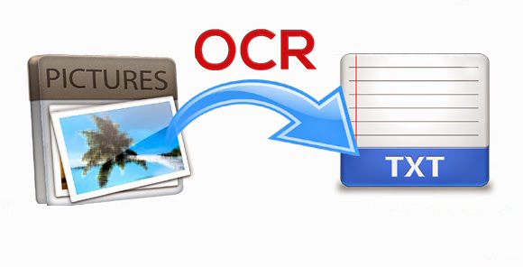

About Me
Welcome to my portfolio. I am Khadijat Agboola, a first-class graduate in Mathematics and Statistics, a Data Scientist, and a Junior Machine Learning Expert. Currently, I work as a Clinical Programmer, where I apply my expertise to solve complex challenges in the healthcare sector.
With hands-on experience in building predictive models, recommendation systems, data analysis, and working with healthcare data, I am passionate about leveraging data to drive meaningful insights and innovations. This portfolio showcases my skills, projects, and the work I have done so far, reflecting my dedication to data science, machine learning, and artificial intelligence. I invite you to explore and learn more about my journey and capabilities.
Skills
Here are some of the skills I have, and I am currently learning to add more skills.
Python
With Python, I have experience building predictive models, data analysis, and implementing machine learning algorithms. I have used libraries such as Pandas, NumPy, Scikit-learn, and TensorFlow for various projects, including healthcare applications like disease prediction models and recommendation systems.
SAS
I have experience using SAS for data analysis and handling large healthcare datasets. I currently work as a clinical programmer, where I use SAS to generate tables, listings, and figures, as well as perform statistical analysis.

Machine Learning & AI
As a Junior Machine Learning Expert, I have hands-on experience in building, training, and optimizing machine learning models, including regression, classification, and ensemble methods. I have used techniques like Random Forest, XGBoost, and Support Vector Machines to solve real-world problems like disease progression forecasting and recommendation systems.

Computer Vision / OpenCV
Using OpenCV, I have applied computer vision techniques for image processing, object detection, and face recognition tasks. I have worked on various projects where computer vision was essential in analyzing and extracting information from images and video streams.
R
In R, I have used it extensively for statistical analysis, data visualization, and machine learning. I have worked on various projects related to predictive analytics, especially in healthcare, using packages like ggplot2, caret, and randomForest to analyze and model data.
Projects
My portfolio features the following projects I have done for client and some I did at my free time.
A Streamlit-Powered OCR App for Effortless Text Extraction from Images and PDF
Highlights
- Automated Text Extraction: Utilized Python libraries like OpenCV and EasyOCR to seamlessly extract text from images and PDFs, ensuring high accuracy and efficiency.
- Data Management and Export: Organized extracted data for easy access, enabling users to export results directly to Excel for further analysis.
- User-Friendly Interface: Built a Streamlit-powered platform providing an intuitive and accessible experience for students, researchers, and professionals handling text-heavy data.
Problem statement: “We need a developer to develop a tool that extracts text (OCR) from uploaded images, organizes and stores the extracted data, and provides a searchable management system."
The Solution: Extractify
Extractify leverages Python libraries like OpenCV, EasyOCR, and pandas, wrapped in a user-friendly Streamlit interface. With this tool, you can upload images or PDFs, extract the text, and even export the results to Excel. It’s perfect for students, researchers, or anyone working with text data.
Building a Personalized Skincare Recommendation System
Highlights
- Data Handling: Cleaned and encoded the dataset for efficient processing.
- Algorithm Design: Leveraged similarity metrics to match users with products.
- Implementation: Built a Python-based model integrated with Typeform inputs.
Problem statement: “We are a personalized skincare brand looking for someone skilled in Typeform and recommendation algorithms to create user-friendly surveys and build algorithms for personalized product suggestions.”
Solution: Dermaguide
The goal was to create a system that could provide tailored skincare product suggestions. The challenge lay in the lack of user feedback — critical for techniques like Collaborative Filtering. Instead, I needed to rely on user attributes (e.g., age, skin type, concerns) to build a Content-Based Filtering model.
Additionally, I had to design a seamless way to collect this data, ensuring an easy and engaging user experience.
Building the Recommendation Model
Using the collected data, I developed a Content-Based Filtering recommendation system. Here’s how:
- Input: User attributes (age group, skin type, concerns).
- Logic: The algorithm analyzes the provided features to identify the most suitable products.
- Output: Personalized product recommendations tailored to the user’s profile.
Predictive models aimed at diagnosing and forecasting the progression of liver disease.

Highlights
- Data Cleaning and Analysis:Conducted thorough data cleaning and exploratory analysis on a liver disease dataset to uncover key patterns and insights, ensuring a robust foundation for model development.
- Predictive Model Development:Trained and compared the performance of seven machine learning models, identifying the top three performers for diagnosing liver disease with high accuracy.
- Ensemble Solution: Built an ensemble model combining predictions from the best-performing models to enhance reliability and provide a non-invasive alternative for liver disease diagnosis.
Problem statement: “We are looking for an expert in data analysis and machine learning to develop predictive models aimed at diagnosing and forecasting the progression of liver disease. This project is based on retrospective data from three major hospitals and seeks to provide a non-invasive alternative to current diagnostic methods.”
The Solution:
To develop this predictive model for diagnosing and forecasting liver disease progression, I utilized a Kaggle dataset, cleaned and prepared the data, and performed exploratory analysis to identify key patterns. The project leveraged machine learning tools like Logistic Regression, Random Forest, and XGBoost to train and evaluate models, focusing on the target variable “Dataset” (1: disease, 2: no disease). Ultimately, I combined the top-performing models into an ensemble for enhanced accuracy. Tools such as Python, pandas, scikit-learn, and Matplotlib were instrumental in building this non-invasive diagnostic system, offering a promising alternative to traditional methods.
More Projects
EnergyApp: Renewable Energy Forecasting
Problem:
Global energy consumption patterns reveal significant disparities in the adoption of renewable energy sources, raising concerns about sustainability and future energy demands. Identifying key trends and accurately forecasting renewable energy production is crucial for informed decision-making.
Solution:
To address this, I developed EnergyApp, a data-driven solution leveraging Python for data analysis, visualization, and machine learning. Using libraries like Pandas, Matplotlib, and Scikit-learn, I conducted a comprehensive trend analysis to identify major contributors to energy production. A Linear Regression model was employed to forecast future renewable energy output based on historical data. Additionally, I provided actionable optimization recommendations to enhance renewable energy adoption and utilization, emphasizing sustainability. This application serves as a strategic tool for planning and resource management.